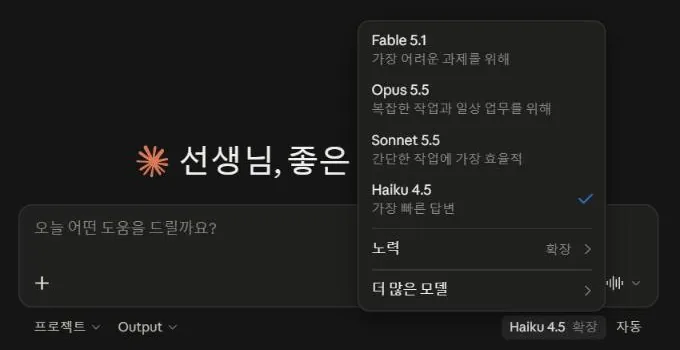

바이브코딩이란
2분바이브코딩이 무엇이고, 어디까지 되는지부터 짚어보겠습니다!
코드를 몰라도, 말로 시켜서 만듭니다
만들고 싶은 것을 말로 설명하면 AI가 코드를 쓰고, 저는 결과를 보면서 다시 말로 고칩니다.
여러 바퀴면
수업 도구
바이브코딩이라는 말은 2025년 초 AI 연구자 안드레이 카파시가 처음 썼습니다. 코드를 한 줄씩 짜는 대신 원하는 느낌을 말로 전하고, 나온 결과를 보면서 다시 말로 고치는 방식입니다.
저는 코드를 정식으로 배운 적이 없습니다. 제가 하는 일은 수업 장면을 설명하고, 나온 화면이 과학적으로 맞는지 확인하고, 틀린 곳을 짚어 고쳐 달라고 하는 것입니다.
어디까지 되나
한 파일짜리 수업 도구는 오늘 백 분 안에 만듭니다. 서버를 붙이면 학생 기록을 모으는 앱까지 갑니다.
시뮬레이션, 퀴즈, 타이머, 칠판 강의 화면. 오늘 분임 실습에서 만듭니다.
차시 페이지 여러 장을 허브 하나로 묶습니다. 전시실의 전기와 자기 단원이 이렇게 만들어졌습니다.
서버를 붙이면 제출, 모둠 기록, 교사 화면까지 됩니다. ③ 데이터·AI 매뉴얼에서 다룹니다.
레몬 백작의 부탁처럼 섬을 돌아다니는 게임도 됩니다. 다만 고치는 데 시간이 오래 걸립니다.
과학적으로 맞는지 확인하는 일, 학생 정보를 지키는 일, 무엇을 만들지 정하는 일입니다.
초안은 금방 나옵니다. 시간은 대부분 고치는 데 들어갑니다. 전시실의 큰 작품들도 처음부터 그 모습이었던 것이 아니라, 수업에 쓰면서 여러 번 고쳐 키운 것들입니다.
전시실 · 제가 만든 것들
5분제가 수업과 업무에 쓰려고 만든 것들을 전시실처럼 한 바퀴 둘러보겠습니다!
액자를 누르면 크게 보입니다
작품마다 무엇에 쓰는지 적어 두었습니다. 마음에 드는 작품에 별을 붙여 두시면 분임 실습 때 아이디어로 다시 꺼내 보실 수 있습니다.
액자를 누르면 큰 화면과 함께 비슷한 것을 만들어 보는 첫 부탁이 나옵니다. 실습에서 무엇을 만들지 막막하시면 그 부탁을 복사해 시작하셔도 됩니다. 다른 선생님들이 만든 것은 나눔 시간에 GiteacherHub에서 함께 봅니다.
바이브코딩 도구 지도
3분바이브코딩 도구를 다섯 갈래로 나눠 어떤 차이가 있는지 보겠습니다!
같은 AI라도 일하는 자리가 다릅니다
채팅창에서 코드를 받아 오느냐, AI가 내 컴퓨터 폴더에서 직접 일하느냐가 가장 큰 차이입니다.
| 갈래 | 대표 도구 | AI가 하는 일 | 이럴 때 |
|---|---|---|---|
| 웹 채팅 | ChatGPT · Claude · Gemini · SenGPT | 코드를 채팅창에 써 줍니다. 파일로 저장하는 일은 제가 합니다. | 무료 계정으로 처음 해 볼 때, 한 파일짜리 도구 |
| 데스크톱 앱 | ChatGPT 앱의 Codex · Claude 앱의 Code 탭 | 폴더를 열어 두면 파일을 직접 만들고, 고치고, 열어 봅니다. | 여러 번 고쳐 가며 키울 때 |
| 터미널 | Claude Code · Codex CLI · Gemini CLI | 앱과 같은 일을 검은 창에 글로 시킵니다. | 익숙해진 뒤 여러 작업을 한꺼번에 맡길 때 |
| 코드 편집기 | VS Code · Cursor · Antigravity | 코드를 눈으로 보면서 AI와 같이 고칩니다. | 코드를 직접 읽어 보고 싶을 때 |
| 브라우저 에이전트 | Claude in Chrome · ChatGPT의 Chrome 확장 | AI가 내 크롬을 직접 눌러 가며 확인하고 작업합니다. | 만든 앱을 AI가 눌러 보며 검사할 때, 웹사이트에서 하는 일을 맡길 때 |
웹 채팅에서는 코드가 채팅창 안에 있어서, 파일로 옮겨 담는 일을 제가 합니다. 데스크톱 앱에서는 AI가 폴더 안에서 파일을 만들고, 고치고, 열어 봅니다.
오늘 분임 실습은 웹 채팅이나 데스크톱 앱으로 합니다. 웹 채팅은 무료 계정으로도 되고, 데스크톱 앱은 유료 요금제에서 넉넉하게 씁니다. ChatGPT 무료 계정도 데스크톱 앱에서 Codex를 조금 쓸 수 있지만 가벼운 모델만 됩니다. 4단계 요금제 표의 「Codex 조금」을 누르면 자세히 나옵니다. 코드 편집기 가운데 Antigravity는 개인에게 무료이고 한도가 주마다 다시 채워지며, Cursor는 월 20달러 요금제부터 넉넉해집니다. VS Code에 붙여 쓰는 GitHub Copilot은 교사 인증(GitHub Education)을 받으면 Pro 요금제를 무료로 쓸 수 있습니다.
저는 Claude 앱의 Code 탭을 주로 쓰고, Codex를 함께 씁니다.
폴더에서 일하는 도구가 좋은 점
만든 파일이 폴더에 그대로 남아서, 새 대화를 열어도 이어서 고칠 수 있습니다.
대화가 끝나도 폴더에 파일이 있으니 "이 폴더의 index.html을 이어서 고쳐 줘" 한 줄이면 이어집니다.
차시 페이지 여러 장, 그림 파일, 데이터 파일을 한꺼번에 만들고 서로 잇습니다.
만든 페이지를 직접 실행해 보고, 오류가 나면 제가 말하기 전에 고치기도 합니다.
폴더의 CLAUDE.md나 AGENTS.md에 적어 둔 규칙을 대화를 시작할 때마다 저절로 읽습니다.
새로 나온 것브라우저를 직접 다루는 AI
Claude in Chrome과 ChatGPT의 Chrome 확장은 AI가 내 크롬을 직접 눌러 가며 일합니다. 만든 앱을 학생처럼 눌러 보며 검사하게 하거나, 웹사이트에서 하는 일을 통째로 맡길 수 있습니다.
AI가 제 크롬에서 사이트를 열고, 그림을 올리고, 단추를 누르고, 파일을 받습니다. 저는 로그인과 결제처럼 제가 해야 하는 순간에만 손을 댑니다. 전시실의 NET ZERO ECO-CITY에 들어간 건물 모형도 Meshy로 만든 것입니다.
Claude in Chrome은 2026년 8월 26일에 정식으로 나왔고, Claude 유료 요금제(Pro 이상)에서 씁니다. ChatGPT는 데스크톱 앱의 설정에서 Computer Use 항목의 Chrome 확장을 설치한 뒤, 대화창에서 @Chrome으로 부릅니다. 둘 다 제가 로그인한 크롬에서 그대로 일합니다. ChatGPT의 확장으로 컴퓨터에 있는 파일을 사이트에 올리려면, 크롬의 확장 프로그램 관리 화면에서 이 확장의 「파일 URL에 대한 액세스 허용」을 켜야 합니다. OpenAI 안내에는 Plus 이상 요금제에 들어 있다고 적혀 있고, 무료와 Go 요금제에서 되는지는 적혀 있지 않습니다.
로그인된 사이트에서 AI가 대신 누르는 것이라, 결제나 메일 보내기처럼 되돌리기 어려운 일은 맡기지 않습니다. 웹 페이지 안에 AI를 속이려는 글이 숨어 있을 수도 있어서, 처음 가는 사이트에서는 한 단계씩 확인합니다.
Meshy 무료 요금제는 한 달 100크레딧이고, 무료로 받을 수 있는 모형은 가벼운 모델(Meshy 6 Lite)로 만든 것 한 달 10개까지입니다. 무료로 만든 모형은 Meshy를 출처로 밝히고 씁니다(CC BY 4.0). Meshy는 만 14세 이상이 쓰는 서비스라서, 학생에게 직접 시키지 않고 제가 만들어 수업에 넣습니다. 모두 2026년 9월 안내 기준입니다.
모델, 요금제, 토큰
3분AI의 두뇌인 모델과, 쓸 수 있는 양을 정하는 요금제와 토큰을 짚어보겠습니다!
모델은 AI의 두뇌입니다
같은 앱 안에서도 모델을 고를 수 있습니다. 똑똑한 모델일수록 사용량을 빨리 씁니다.
| 회사 | 가장 똑똑한 모델 | 주로 쓰는 모델 | 가볍고 빠른 모델 |
|---|---|---|---|
| Anthropic (Claude) | Fable 5.1 | Opus 5.5 · Sonnet 5.5 | Haiku 4.5 |
| OpenAI (ChatGPT) | GPT-6 Astra | GPT-6.1 Sol · GPT-6 Sol | GPT-6 Luna |
| Google (Gemini) | Gemini 3.1 Pro | Gemini 3.8 Flash | |
2026년 9월 30일 기준입니다. 모델 이름은 몇 주 단위로 바뀝니다.

처음 틀을 잡을 때는 똑똑한 모델이 실수를 덜 합니다. 글자 몇 개를 바꾸거나 색을 고치는 일은 가벼운 모델로도 충분해서, 그런 일에 똑똑한 모델을 쓰면 한도만 빨리 줄어듭니다.
요금제는 쓸 수 있는 양을 정합니다
무료, 월 3만 원 안팎, 월 15만 원 이상의 세 층으로 보면 쉽습니다.
| 무료 | 월 3만 원 안팎 | 월 15만 원 이상 | |
|---|---|---|---|
| ChatGPT | 채팅, | Plus 29,000원 · | Pro 159,000원부터 |
| Claude | 채팅, 아티팩트 미리보기 (Code 탭 없음) | Pro 22달러 · Code 탭, Claude in Chrome | Max 110달러·220달러 |
| Gemini 캔버스, Antigravity | AI Pro 29,000원 | AI Ultra 119,000원부터 | |
| SenGPT | 서울 교원 학교 계정으로 쓰고, 개인 결제는 없습니다. 월 사용량 한도가 있습니다. | ||
ChatGPT 무료와 Go 요금제에서도 Codex를 씁니다. 다만 ChatGPT 데스크톱 앱 안에서, 가장 가벼운 모델인 GPT-6 Luna로만 됩니다. 몇 번까지 되는지는 공개된 숫자가 없고, OpenAI는 간단한 코딩 작업용이라고 적어 두었습니다. 웹에서 돌리는 Codex(클라우드)는 무료와 Go에서 쓸 수 없습니다.
Plus부터는 웹, 터미널, 코드 편집기에서도 쓰고, 더 똑똑한 GPT-6 Sol과 Astra를 고를 수 있습니다. 한도는 5시간마다 다시 채워지는 몫과 한 주 몫이 있고, 네 자리가 한도를 함께 나눠 씁니다. 따로 있던 Codex 앱은 2026년 7월에 ChatGPT 데스크톱 앱 안으로 합쳐졌습니다.
| 자리 | 코드가 도는 곳 | 보는 파일 | GitHub | 무료 |
|---|---|---|---|---|
| 데스크톱 앱 ChatGPT 앱의 Codex | 내 컴퓨터 | 연 폴더 | 없어도 됨 | 됨 (GPT-6 Luna) |
| 웹 · 클라우드 chatgpt.com의 Codex | OpenAI의 컴퓨터 | 연결한 GitHub 저장소 | 있어야 함 | 안 됨 |
| 터미널 Codex CLI | 내 컴퓨터 | 명령을 친 폴더 | 없어도 됨 | 안내 없음 |
| 코드 편집기 VS Code 등의 확장 | 내 컴퓨터 | 열어 둔 파일 | 없어도 됨 | 안내 없음 |
2026년 9월 30일 OpenAI 안내 기준입니다. 무료 요금제에서 터미널과 코드 편집기가 되는지는 안내에 따로 적혀 있지 않습니다.
2026년 9월 30일 한국 결제 화면 기준입니다. Claude는 달러로 결제되고 부가세가 포함된 값입니다. 그 사이에 ChatGPT Go(월 13,000원), Google AI Plus(월 7,500원) 같은 가벼운 요금제도 있습니다.
유료 요금제는 5시간마다 다시 채워지는 한도와 한 주 동안 쓸 수 있는 한도가 함께 있습니다. ChatGPT Plus의 Codex와 Claude Pro 모두 그렇습니다. 저는 매달 3만 원에서 15만 원 사이의 요금제를 씁니다. 그 이야기는 뒤의 드릴 말씀에서 다시 하겠습니다.
토큰은 AI가 읽고 쓰는 조각입니다
요금제 한도는 메시지 개수가 아니라, AI가 읽고 쓴 토큰의 양만큼 줄어듭니다.
나누는 방식은 모델마다 조금씩 다릅니다. 부탁문보다 AI가 읽고 쓰는 코드가 훨씬 길어서, 한도는 대부분 코드에서 줄어듭니다.
300줄짜리 앱을 만들고 두 번 고칠 때, AI가 새로 쓰는 양앱도 고치기 전에 파일을 읽느라 토큰을 쓰지만, 새로 쓰는 양은 바뀐 줄뿐입니다. 웹 채팅에서도 "바뀐 부분만 보여 줘"라고 하면 덜 쓰지만, 그 부분을 제가 찾아서 바꿔 넣어야 합니다.
AI는 글을 토큰이라는 작은 조각으로 나눠 읽고 씁니다. 부탁문 몇 줄보다 AI가 읽어야 하는 코드가 훨씬 깁니다. 그래서 "파일 전체를 다시 써 줘"처럼 긴 코드를 통째로 다시 받는 부탁이 가장 많이 씁니다. 데스크톱 앱은 고칠 부분만 바꾸니 덜 쓰고, 웹 채팅은 고칠 때마다 코드 전체를 다시 받으니 더 씁니다.
대화가 길어지면 AI가 앞부분을 스스로 요약해서 이어 갑니다. 요약하면서 자잘한 약속이 빠질 수 있어서, 꼭 지킬 규칙은 파일에 적어 두고 읽게 하는 편이 안전합니다. 폴더에서 일하는 도구는 파일이 남아 있으니 새 대화를 열어도 이어지고, 코드가 채팅창 안에만 있는 웹 채팅은 새 대화에서 코드를 다시 붙여야 합니다.
웹 페이지의 몸 · HTML, CSS, JavaScript
2분웹 페이지를 이루는 세 가지를 몸에 빗대어, 한 겹씩 입혀 보겠습니다!
HTML은 뼈대, CSS는 피부와 옷, JavaScript는 근육과 신경
아래 버튼을 차례로 눌러 보세요. 같은 기체 입자 상자에 한 겹씩 더해집니다.
기체 입자 상자
입자의 크기는 온도가 바뀌어도 그대로입니다. 달라지는 것은 움직이는 빠르기입니다.
HTML은 제목, 슬라이더, 버튼, 그림 자리가 어디에 있는지 적는 뼈대입니다. CSS는 색, 글꼴, 간격, 모서리 같은 겉모습이고, 디자인 서랍의 설계서가 바꾸는 곳이 여기입니다. JavaScript는 슬라이더를 움직이면 온도에 맞춰 입자의 빠르기를 계산하고 다시 그리는 근육과 신경입니다. 이 상자는 입자의 평균 빠르기가 절대온도의 제곱근에 비례하도록 계산해서 그립니다.
오늘 만드는 도구는 이 세 가지를 index.html 한 파일에 모두 담습니다. 그리고 Java와 JavaScript는 이름만 닮은 서로 다른 언어입니다. 웹 페이지를 움직이는 것은 JavaScript입니다.
서버, 백엔드, 데이터베이스
2분서버가 무엇이고, 언제 있어야 하는지 구글 설문에 빗대어 보겠습니다!
구글 설문으로 보면 쉽습니다
학생이 보는 설문지 화면, 응답을 받아 두는 구글의 컴퓨터, 응답이 쌓이는 시트. 셋이 각각 프론트엔드, 서버·백엔드, 데이터베이스입니다.
오늘 만드는 한 파일짜리 도구에는 서버가 없습니다. 화면만 있어서, 학생이 무엇을 누르든 그 기록은 학생 기기의 브라우저 안에만 저장됩니다. 학생들의 답을 제 화면으로 모으려면 받아 주는 곳과 쌓아 두는 곳, 곧 서버와 데이터베이스가 있어야 합니다.
서버 없이 되는 것, 서버가 있어야 되는 것
시뮬레이션, 퀴즈, 타이머, 칠판 강의 화면. 링크 하나로 나눠 주고, 기록은 각자 기기에만 저장됩니다.
학생 제출 모으기, 여러 기기가 같은 화면을 함께 쓰기, 다른 기기에서 이어 하기, 교사 관리 화면, AI 연결.
| 누가 | 답 |
|---|---|
| 학생 1 | … |
| 학생 2 | … |
| 학생 3 | … |
학생 정보를 모으는 순간 개인정보를 다루게 됩니다. 2026학년도부터 학교에서 쓰는 에듀테크와 소프트웨어는 학교운영위원회 심의를 거치게 되었으니, 직접 만든 앱이라도 학생 정보를 모은다면 학교의 절차를 먼저 확인합니다.
부탁문을 AI에게 부탁하기
1분부탁문을 잘 쓰는 요령 대신, 부탁문 자체를 AI에게 부탁해보겠습니다!
프롬프트 엔지니어링에서, 부탁문을 부탁하기로
무엇을 만들고 싶은지 대충 말하고, 코딩 AI에게 줄 부탁문을 먼저 써 달라고 합니다.
대충 말하기
부탁문을 씀
몇 해 전만 해도 AI에게 역할을 정해 주고 형식을 못 박는 요령을 따로 배웠습니다. 지금 모델들은 사람 말을 훨씬 잘 알아들어서 부탁문도 잘 씁니다. 막연할 때는 부탁문부터 받아 보고, 수업에 맞지 않는 줄만 고쳐 보내면 됩니다. 어떤 부탁이든 끝에 "만들기 전에 궁금한 것을 먼저 물어봐 줘"를 붙이면 결과가 한결 나아집니다.
분임으로 흩어지기 전에 드릴 말씀
3분실습에 들어가기 전에 바이브코딩에 대해 꼭 드리고 싶은 이야기를 전하겠습니다!
에듀테크 회사들이 걱정이 많다고 합니다
선생님이 직접 만든 도구가 교실에 더 잘 맞고, 그걸 무료로 공개하시기 때문입니다.
에듀테크 회사들이 걱정이 많다고 합니다. 선생님들이 직접 만든 도구가 교실에 더 잘 맞는 데다, 그걸 무료로 공개하시니까요. 저도 그렇습니다. 지금은 회사에서 만든 프로그램보다 제가 만든 프로그램을 더 자주, 더 만족하면서 쓰고 있습니다.
품위 유지비가 확 올라갔습니다
매달 3만 원에서 15만 원. 코드를 다 알지 못해서, 고치고 관리하려면 AI가 있어야 합니다.
그런데 이걸 시작한 순간부터 따라오는 게 있습니다. 저는 매달 최소 3만 원, 많게는 15만 원짜리 요금제를 씁니다. 제가 만든 프로그램이지만 코드를 제가 다 아는 게 아니라서, 고치고 관리하려면 AI가 있어야 합니다. 토큰이 끊기면 지금 쓰는 수업 도구들을 유지할 수가 없습니다. 품위 유지비가 확 올라가 버린 셈입니다.
저는 기술을 조각으로 배우고 있습니다
문제가 생길 때마다 필요한 기술을 한 조각씩 배웁니다. 해결은 되지만, 조각들이 이어지지는 않습니다.
하나 고백하자면, 저는 기술을 파편적으로, 겉핥기식으로 익혀 가고 있습니다. 예를 들어 CORS 오류가 나면 AI에게 묻고, 받은 코드를 붙여 넣고, 해결합니다. 해결은 했지만 CORS가 무엇인지 체계적으로 공부한 적은 없습니다. 그러다 환경변수 오류가 나면 또 묻고 해결하고, Git 오류가 나면 또 묻고 해결합니다.
HTML, CSS, JavaScript, HTTP, 서버, 데이터베이스, 보안을 차례로 배운 것이 아니라, 문제가 생길 때마다 필요한 기술을 한 조각씩 배우는 중입니다. 바이브코딩으로 배우면 이렇게 됩니다. 도구는 당장 돌아가지만 조각 사이가 비어 있어서, 처음 보는 문제를 만나면 왜 그런지 모른 채 다시 AI에게 물어야 합니다. 이 점은 알고 시작하셨으면 합니다.
선생님만의 설명 방식을 담은 도구
누구나 쓰는 멋진 도구보다, 선생님께만 꼭 필요한 도구를 만들어 쓸 수 있는 때가 됐습니다.
그래서 오늘 꼭 드리고 싶은 말씀이 있습니다. 누구나 쓸 수 있는 멋진 도구를 만드는 걸 목표로 삼기보다, 선생님만의 설명 방식을 담은 프로그램, 선생님께만 꼭 필요한 프로그램을 만들어 쓸 수 있는 때가 됐다는 것입니다.
전시실의 직렬·병렬 강의 화면이 그 예입니다. 아이들이 연결 방법에 따라 전압이 다르게 걸리는 걸 잘 이해하지 못해서, 저는 공차 버블티로 비유해 설명합니다. 그런데 그 비유를 담은 영상은 어디에도 없고, PPT로 만들면 덜 와닿을 것 같았습니다. 마침 AI는 계산해서 움직이게 하는 코드를 잘 짭니다. 지나가는 개수를 정확히 세어 보여 주거나, 같은 빠르기로 흐르게 하거나, 입자가 움직이는 속도를 식대로 맞추는 일은 제가 손으로 그리는 것보다 코드가 훨씬 잘합니다. 저는 바이브코딩을 이런 자리에 씁니다. 모든 걸 바이브코딩으로 만들려고 하면 시간이 너무 오래 걸립니다.
화면은 실험실을 대신하지 못합니다
아이들은 화면을 보고 잠깐 감탄할 뿐입니다. 과학은 실험실에서 직접 겪을 때 가장 과학답습니다.
하나 더 말씀드리면, 저는 이런 걸 만들어 놓고 엄청난 콘텐츠라고 여기는 걸 경계합니다. 아이들은 화면을 보고 잠깐 감탄할 뿐입니다. 선생님들이 저보다 더 잘 아시겠지만, 과학은 실험실에서 직접 보고, 듣고, 만지고, 재미있는 시범 실험을 보면서 겪을 때 가장 과학답다고 생각합니다.
한두 번이면 충분합니다
누군가 만들어 둔 게 없을 때 하나를 차근차근 만들고, 아이들과 조금 다른 수업을 한두 번 해 보시면 오늘은 성공입니다.
그래서 오늘은 너무 큰 기대 없이, 이런 방법이 있다는 것만 가져가셨으면 합니다. 수업 아이디어가 떠올랐는데 누군가 만들어 둔 게 없다면, 그때 하나를 차근차근 만들어 보시면 됩니다. 유료 요금제를 쓰고 계시면 배포까지 그냥 시키시면 되고, 아니시면 오늘 배우신 방법으로 직접 올리시면 됩니다. 그렇게 만든 링크로 아이들과 조금 다른 수업을 한두 번 해 보시면, 저는 그것만으로 오늘이 성공이라고 생각합니다.
분임을 고르고 매뉴얼 따라 만들기
60분두 가지 질문에 답해 분임을 고르고, 매뉴얼을 따라 직접 만들어보겠습니다!
두 가지만 답하면 분임이 정해집니다
학습지를 칠판에 띄우는 강의 화면을 만들고 싶으시면, 어느 분임이든 칠판 강의 화면 매뉴얼로 가셔도 됩니다.
쓰시는 도구를 먼저 골라 두세요
여기서 고르시면 매뉴얼을 열었을 때도 그 도구에 맞는 설명만 보입니다.
매뉴얼
매뉴얼의 마지막 칸이 다음 매뉴얼의 첫 칸으로 이어집니다. 일찍 끝나시면 다음 매뉴얼로 넘어가셔도 됩니다.
GiteacherHub에서 나누기
15분만든 것을 보관함에 올리고, 서로 열어 보며 의견을 남겨보겠습니다!
GiteacherHub · 교실 앱 보관함
선생님들이 바이브코딩으로 만든 교실 앱을 모아 두는 곳입니다. 오늘 회차의 PIN은 앞 화면에 있습니다.
- 만든 파일 올리기매뉴얼마다 마지막 칸에 올리는 순서가 있습니다
- 올라온 다른 선생님 앱 세 개 열어 보기올리면 바로 목록에 보입니다
- 열어 본 앱마다 의견 한 줄 남기기좋았던 점 하나, 내 수업이라면 바꾸고 싶은 점 하나
- 마음에 드는 앱은 원본을 받아 내 수업에 맞게 고치기앱 화면의 [원본 받기] → 내 폴더에 저장 → AI에게 고쳐 달라고 부탁
보관함에 올린 앱은 바로 목록에 올라옵니다. 올리기 전에 학생 이름이나 사진이 들어 있지 않은지 한 번 더 봐주시길 바랍니다~! 혹시 보이면 제가 바로 내립니다. 앱마다 의견을 남길 수 있어서, 다른 선생님이 어떻게 고쳐 쓰셨는지도 함께 모입니다.
마무리
3분오늘 쓴 자료를 어디서 다시 보실 수 있는지 정리해보겠습니다!
다시 보실 곳
바이브코딩 기초와 전시실, 분임 매뉴얼로 가는 길
① 기초상상만 하던 수업 도구, 말로 만들기
칠판 강의 화면학습지 한 장을 강의 화면으로
③ 데이터·AI학생 데이터와 AI를 내 앱에 연결하기
디자인 서랍설계서 74개와 쓰는 법
GiteacherHub오늘 올린 앱과 의견
오늘 다룬 내용과 매뉴얼은 연수가 끝난 뒤에도 이 주소에서 그대로 보실 수 있게 정리해두었습니다^^